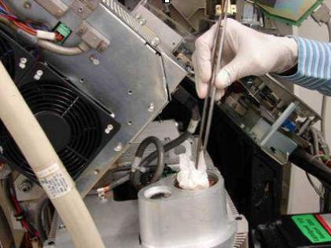
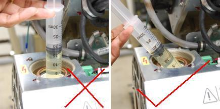
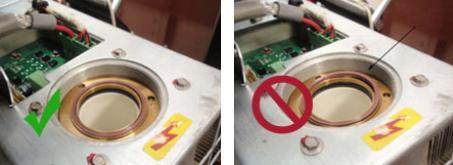
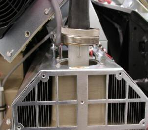
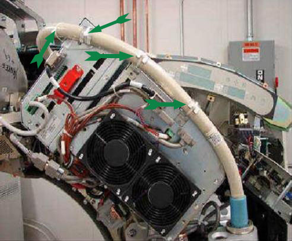
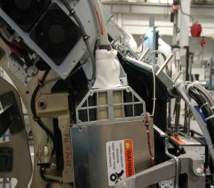

Operating Documentation
Direction 5193574-800, Rev# 22
LightSpeed 7.X Service Methods
Module Version 6.0, Version Date 11/8/10
Operating Documentation |
| Required Persons | Preliminary Reqs | Procedure | Finalization |
|---|---|---|---|
| 1 | Not Applicable | 15 mins | Not Applicable |
This document provides the necessary steps to seat the High Voltage cable in the High Voltage tank receptacle and safely secure the cable.
| Last Revised: | July 30, 2010 |
| Item | Qty | Effectivity | Part# | Manufacturer | |
|---|---|---|---|---|---|
| Spanner Wrench | 1 | - | - | - | |
| Item | Qty | Effectivity | Part# | Manufacturer |
|---|---|---|---|---|
| Syringe | 1 | - | 5343337 | - |
| Transformer Oil | 1 gallon | - | T0552G, T0552F or 2164148 | - |
| Dry Wipes | - | - | - | |
| Latex Gloves | - | - | - | |
| Ty-wraps | - | - | - |
| Condition | Reference | Effectivity |
|---|---|---|
For VCT type X-ray Generation Systems. | - | - |
Power to the system should be turned off. | - | - |
Gantry side covers, gantry top covers, and gantry front cover should be removed. | - | - |
Recommend procedure completion by GE Service trained personnel. | - | - |
With Dry Wipes, soak up the oil in the High Voltage Tank receptacle.
Illustration 1: Clean Tank Receptacle (HD Pictured - Reference Only)

Open syringe package from piston side (avoid any contact with other tip).
| NOTE: | Syringe should be unused and in original supplier package. Do not use a syringe in an open package; dirt collected on syringe can reduce oil quality and damage connector when operated. |
| NOTE: | Use only Mineral Based Transformer oil. Silicone based oil may damage High Voltage Tank receptacle. |
Illustration 2: Syringe Package

Fill up syringe with 18 ml oil from oil can.
Hold the syringe at an angle to the receptacle as shown in Illustration 3 and pump 18 ml oil on to the receptacle wall.
| NOTE: | DO NOT use the syringe in vertical position, this will result in air bubbles which increase the chances of high voltage breakdown. |
Illustration 3: Filling High Voltage Tank Receptacle

Discard the syringe properly.
| NOTE: | DO NOT REUSE THE SYRINGE. |
Install O-Ring
| NOTE: | Ensure that the O-Ring is installed properly |
Illustration 4: O-Ring Installation

With Tube High Voltage cable connector key facing front of gantry, slowly insert Tube High Voltage cable, engaging connector pins, and seat cable in High Voltage Tank receptacle (Illustration 5).
| NOTE: | Make sure to align cable connector key with tank receptacle slot. |
Illustration 5: High-Voltage Cable Connector Key

Hand tighten cable-locking ring.
Rotate cable strain relief for a clean cable dress.
Use spanner wrench to tighten cable-locking ring.
| ||||
| Incorrectly sealed and secured High Voltage cable can result in damage to High Voltage Tank, Tube, or other parts of gantry. Do not over-tighten cable-locking ring. Over-tightening can deform cable plug sealing surfaces, break oil seal between High Voltage Tank receptacle and housing, twisted receptacle, and disrupt internal wiring. Wash hands to clean off oil. | ||||
Carefully wipe up all excess oil.
Position High Voltage cable into each High Voltage Inverter and Auxiliary Box clamp.
Secure High Voltage Cable with Ty-Wraps
Illustration 6: Correctly Secured HV Cable

Add paper napkin to candle stick entrance and secure with Ty-wraps, as shown in Illustration 7.
Illustration 7: Candle Stick Diaper

Disengage rotational lock if engaged.
Rotate Tube to 6 o'clock position. Check for oil leaks and carefully wipe up any excess oil.
Rotate Tube to 3 o'clock position. Check for oil leaks and carefully wipe up any excess oil.